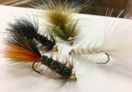

 As winter is approaching trout want to stuff their bellies with as much food as they can before the cold weather hits. This means that bigger streamer patterns come into play. During the fall trout are likely to move from their hole in the river to follow and eat the fly. A pattern that is a must have in every fly box is a wolly bugger in a variaty of colors. Some must have colors are olive, black, white, brown. They can be stripped or deaddrifted. It all depends on what the trout are lookign for that day so try stripped or deaddrifted out to see what works.